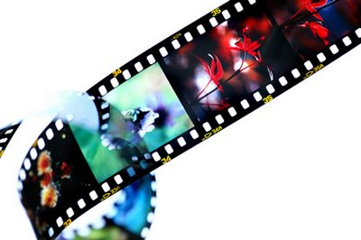

Técnico en laboratorio de imagen
Ciclo Medio
El curso de Grado Medio en Laboratorio de Imagen está destinado a la formación de profesionales expertos en el terreno de la imagen digital, fotografía digital, realización, producción y postproducción de audiovisuales. Con un programa actualizado a las demandas del mercado de hoy en día, se imparten los conocimientos para crear un perfil profesional cualificando apto para desempeñarse en diversos cargos de las empresas del sector audiovisual.

- Revelado de soportes fotosensibles
- Positivado, ampliación y acabados
- Tratamiento de imágenes fotográficas por procedimientos digitales
- Administración, gestión y comercialización en la pequeña empresa
- Procesos de imagen fotográfica
- Formación y orientación laboral
- Formación en centro de trabajo (F.C.T)
Puestos de trabajo más relavantes:
- Técnico Colorista en Imagen Digital
- Técnico de procesado de soportes fotosensibles en color y blanco y negro
- Técnico de positivado en color, blanco y negro y ampliación
- Técnico de tratamiento de imágenes
- Técnico de laboratorio de imagen